노션이 처음이신 분도 이 문서만 그대로 따라 하면 됩니다. 인쇄해서 화면 옆에 두고 한 단계씩 보셔도 좋습니다.
페이지 주소: https://app.notion.com/p/nsion/37da502b05cc819daf5fd7cfae3a9f05 (즐겨찾기 해두시면 매번 찾지 않아도 됩니다 — 방법은 0-4 참고)
한 화면 안에서 메모 + 표(엑셀) + 게시판을 같이 쓸 수 있는 협업 도구입니다. 이 양식에서는 주로 표(데이터베이스) 에 주간보고·이슈·회의록을 한 줄씩 쌓아갑니다. 어렵게 생각하지 마시고 "칸을 채우는 엑셀" 이라고 생각하시면 됩니다.
세 가지 방법 모두 같은 내용입니다. 편한 걸 쓰세요.
| 방법 | 어떻게 |
|---|---|
| PC 웹브라우저 (가장 쉬움) | 크롬/엣지에서 위의 페이지 주소를 입력 |
| PC 앱 | notion.so/desktop 에서 프로그램 설치 후 로그인 |
| 휴대폰 앱 | 앱스토어/플레이스토어에서 "Notion" 검색 → 설치 |
매번 주소를 찾지 않도록 한 번만 해두세요.
1. 페이지를 엽니다.
2. 화면 오른쪽 위 별(☆) 또는 ••• 메뉴를 누릅니다.
3. "즐겨찾기에 추가(Add to Favorites)" 를 누릅니다.
→ 이제 왼쪽 사이드바 Favorites(즐겨찾기) 에 항상 떠 있습니다.
/(슬래시) 키 를 치면 "무엇을 넣을까?" 메뉴가 뜹니다. (글, 표, 차트 등)💡 처음엔 "잘못 누르면 어쩌지" 걱정되시겠지만, 노션은 웬만한 건 되돌릴 수 있습니다.
Ctrl + Z(맥은⌘ + Z)가 실행 취소입니다. 잘못했다 싶으면 이 키!
페이지를 위에서 아래로 내리면 이런 순서로 되어 있습니다.
┌─────────────────────────────────────────────┐
│ 📢 공지사항 │ ✅ 운영 규칙 │ ← 회의 시간·규칙 (읽기용)
├─────────────────────────────────────────────┤
│ 📖 사용 가이드 (펼쳐보기) │ ← 짧은 요약 (이 문서가 상세판)
├─────────────────────────────────────────────┤
│ 📊 주간 현황 (차트 자리) │ ← 그래프 넣는 곳 (6번)
├─────────────────────────────────────────────┤
│ 데이터베이스 5개 │
│ ① 팀 구성원 ② 주간보고 ③ 이슈·질문 보드 │
│ ④ 주간회의록 ⑤ 프로젝트(← 모든 게 모이는 곳) │
└─────────────────────────────────────────────┘
5개의 표(데이터베이스)가 핵심입니다.
| 표 이름 | 무엇을 적나요 | 누가·언제 |
|---|---|---|
| ① 팀 구성원 | 함께 일하는 사람 명단 | 처음 한 번 등록 |
| ② 주간보고 | 한 주 동안 한 일·계획 | 매주 회의 전날 |
| ③ 이슈·질문 보드 | 막힌 것·물어볼 것·결정할 것 | 생길 때마다 |
| ④ 주간회의록 | 회의에서 정한 것 | 회의 후 |
| ⑤ 프로젝트 | 프로젝트 목록 + 위 내용이 자동으로 모임 | 프로젝트 시작 시 |
이 3가지만 이해하면 나머지는 응용입니다.
••• 메뉴가 나타납니다. 연필을 누르거나 카드를 클릭하면 그 줄이 하나의 문서 페이지로 펼쳐집니다. 거기에 본문을 길게 적을 수 있어요.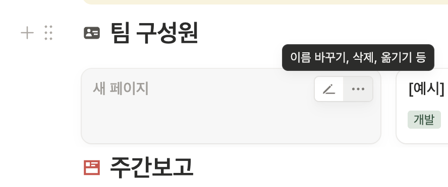
•••(이름 바꾸기·삭제·옮기기) 메뉴프로젝트 칸에서 어떤 프로젝트인지 골라주기만 하면 됩니다.프로젝트 칸 지정을 빠뜨리면, 어디에도 안 모이고 둥둥 떠다닙니다. → 이게 제일 흔한 실수예요. 꼭 지정!이 양식의 리듬은 "보고 → 회의 → 정리" 입니다.
| 시점 | 할 일 | 어디에 |
|---|---|---|
| 회의 전날까지 | 이번 주 한 일·다음 주 계획을 주간보고로 작성 | ② 주간보고 |
| 평소(수시) | 막히거나 결정 필요한 건 이슈로 등록 | ③ 이슈·질문 보드 |
| 주간회의 | 보고는 미리 읽고 옴 → 회의는 이슈·결정 중심 | (디스코드 등) |
| 회의 후 | 정한 것·다음 할 일을 회의록으로 정리 | ④ 주간회의록 |
📌 보고서는 회의 시간에 읽는 게 아니라, 회의 전에 미리 읽고 옵니다. 회의는 낭독이 아니라 "막힌 것·결정할 것"에 집중하기 위함입니다.
모든 표에서 새 줄을 만드는 버튼은 똑같이 표 맨 아래의
+ 새로 만들기(New)입니다. 아래 순서대로 한 번만 해보면 금방 익숙해집니다.
함께 일할 사람을 먼저 명단에 올립니다.
새로 만들기 버튼(또는 빈 칸의 + 새 페이지)을 클릭.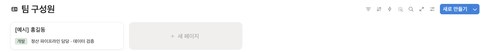
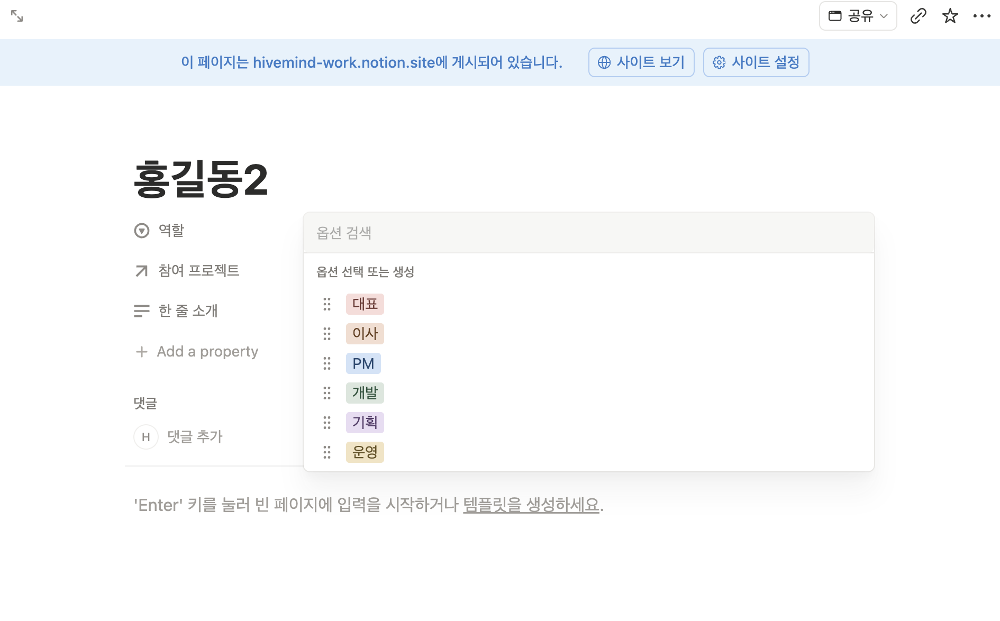
페이지 연결 에서 프로젝트를 고릅니다. 한쪽만 연결하면 프로젝트 쪽 참여 인원에도 자동으로 들어갑니다.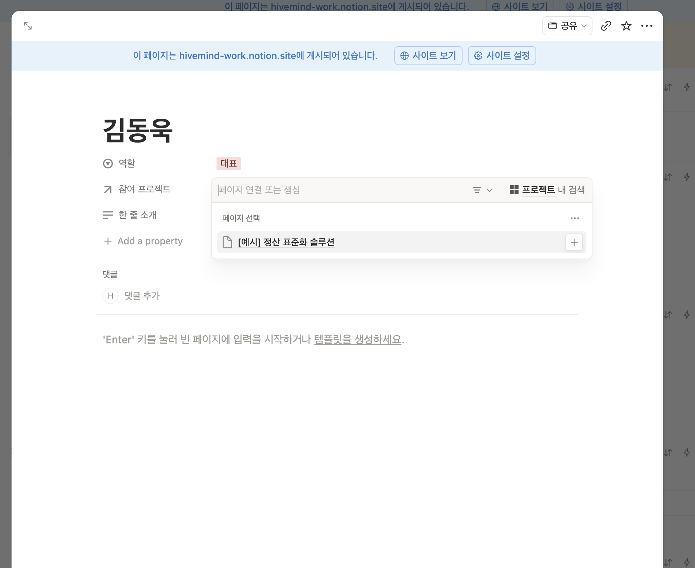
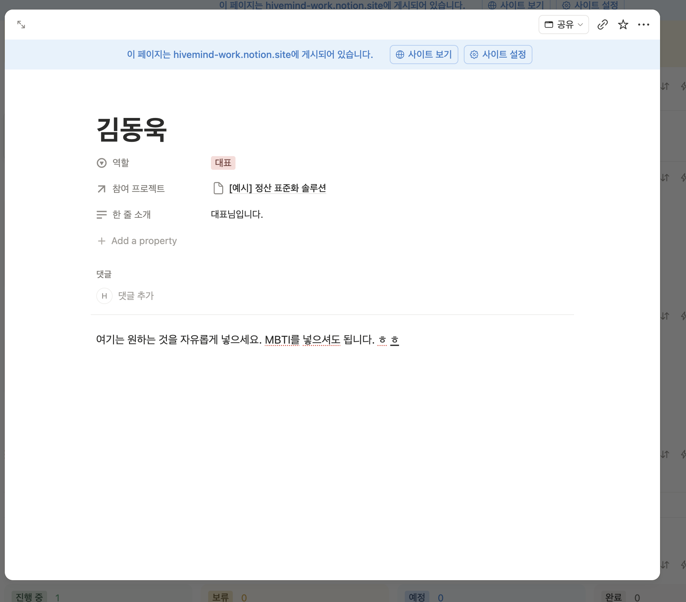
모든 보고·이슈·회의록이 모이는 "그릇"을 먼저 만듭니다.
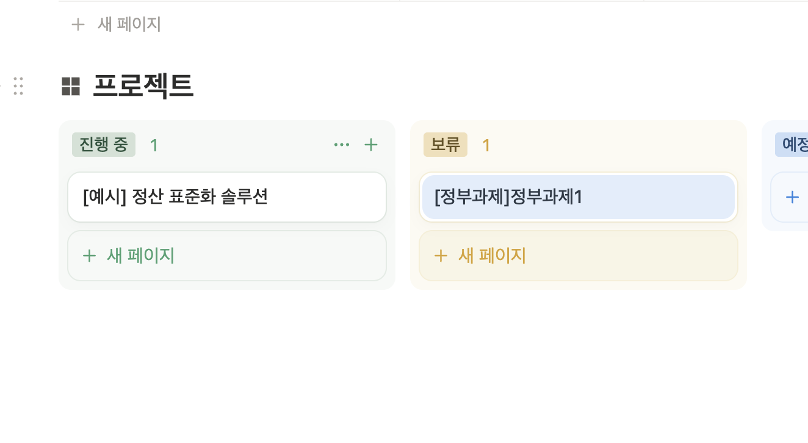
+ 새 페이지로 추가+ 새 페이지 클릭.종료일 토글을 켜고 종료일을 누릅니다. (끝나는 날을 모르면 시작일만 넣어도 됨)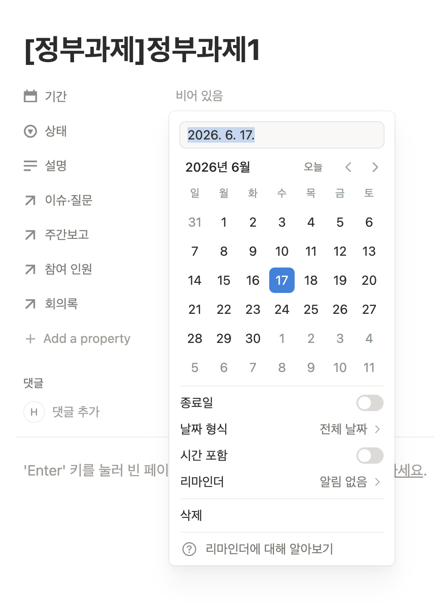
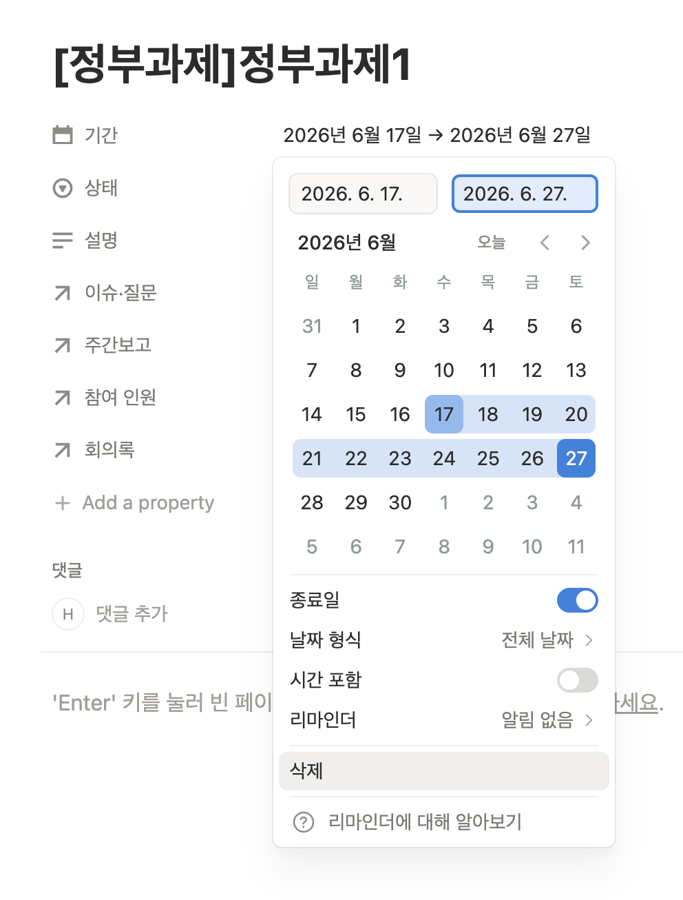
회의 전날까지 작성합니다.
+ 새로 만들기 클릭.열기(OPEN) 를 눌러 페이지를 펼친 뒤, 그 안에 내용을 자유롭게 적습니다.
- 추천 틀: 이번 주 한 일 / 다음 주 할 일 / 막힌 것·도움 필요막히거나, 물어볼 것, 함께 결정할 것이 생기면 바로 등록합니다.
+ 새로 만들기 클릭.+ 새로 만들기 클릭.열기 해서 본문에 결정사항 / 액션아이템(누가·무엇·언제까지) 을 적습니다.4번에서 만들 때 프로젝트 칸만 지정해 두면, 따로 정리하지 않아도 됩니다.
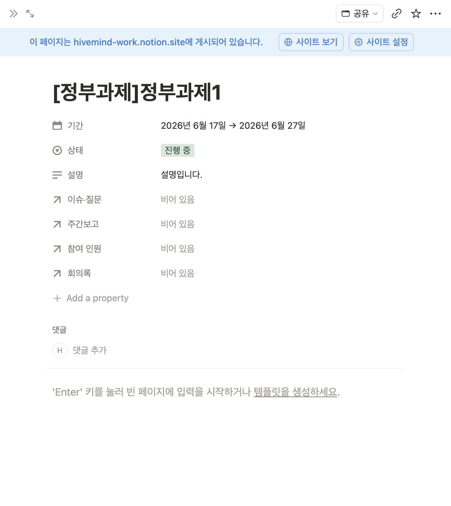
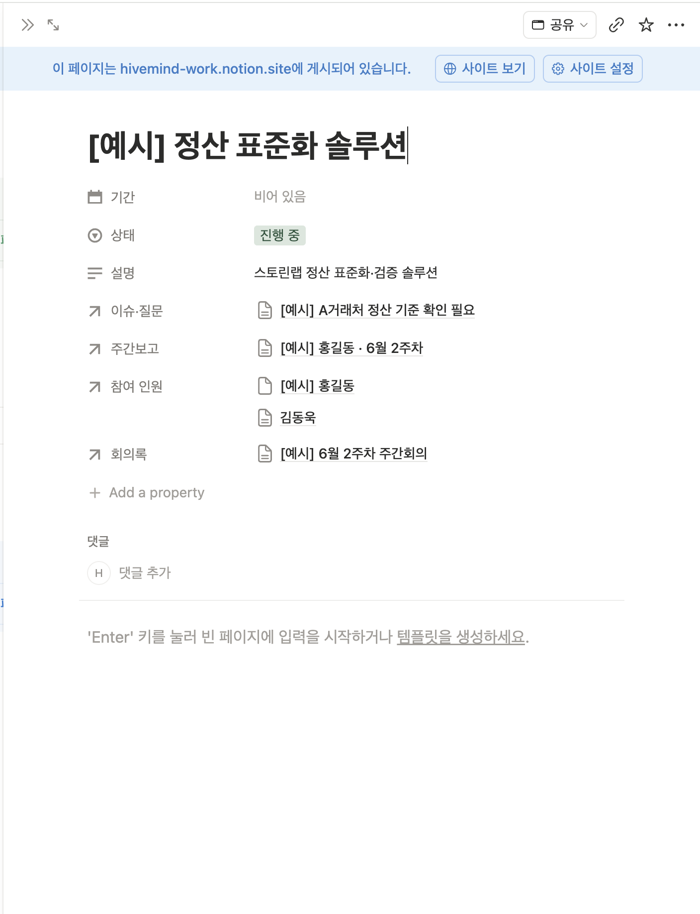
그림 9 → 그림 10의 차이가 이 양식의 핵심입니다. 보고·이슈·회의록을 만들 때
프로젝트칸만 지정하면, 따로 옮기지 않아도 여기에 저절로 쌓입니다.
📊 주간 현황 자리에 그래프를 넣고 싶다면:
📊 주간 현황 아래 빈 줄을 클릭합니다./차트 라고 입력하고 Enter.추천 3가지: - 이슈·질문 보드 → 도넛 차트, 그룹 = 상태 (대기 중 vs 완료 비율) - 주간보고 → 막대 차트, 그룹 = 주차 (주차별 제출 수) - 주간보고 → 도넛 차트, 그룹 = 상태 (작성중 vs 완료)
Q. 프로젝트 칸을 안 골랐어요.
→ 보고/이슈/회의록이 프로젝트 페이지에 안 모입니다. 해당 줄을 열어 프로젝트 칸을 지금 선택하면 바로 연결됩니다.
Q. 같은 사람을 실수로 두 번 등록했어요. → 하나를 지웁니다. 다만 그 사람이 어딘가에 연결돼 있으면, 남길 쪽으로 다시 연결한 뒤 중복을 지우세요.
Q. 저장은 어떻게 하나요? → 자동 저장입니다. 따로 누를 게 없어요. 입력하는 순간 저장됩니다.
Q. 실수로 줄을 지웠어요. 복구 되나요?
→ 됩니다. 페이지 오른쪽 위 ••• → 휴지통(Trash) 에서 복원할 수 있습니다. (개별 페이지는 Ctrl/⌘ + Z로도 즉시 복구)
Q. 줄을 지우거나 복제하려면?
→ 카드 위 ••• 메뉴를 엽니다. 복제(⌘D) 로 똑같은 카드를 하나 더 만들거나, 맨 아래 빨간 휴지통으로 이동(Del) 으로 삭제합니다.
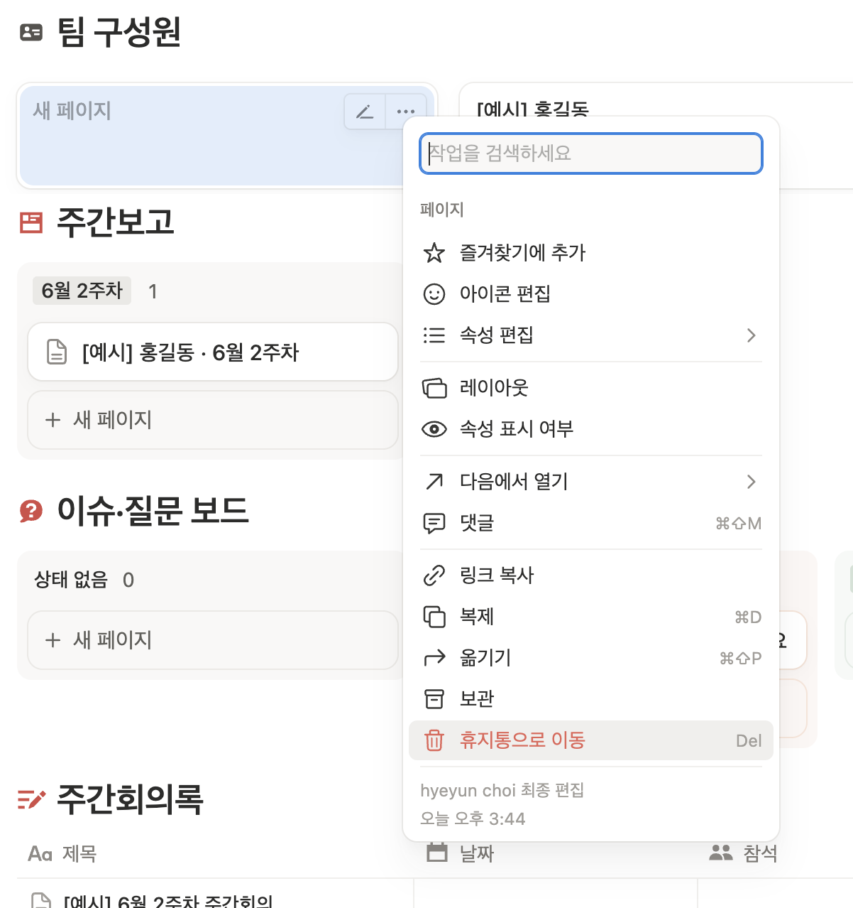
••• 메뉴: 복제·옮기기·보관·휴지통으로 이동 등Q. '게시(Publish)'와 '공유(Share)'는 뭐가 다른가요? → 공유는 함께 편집할 사람을 초대하는 것이고(우리가 쓰는 방식), 게시는 링크만 있으면 누구나 웹에서 볼 수 있게 공개하는 것입니다. 게시는 보기 전용이라, 실제로 같이 쓰려면 공유로 초대해야 합니다.
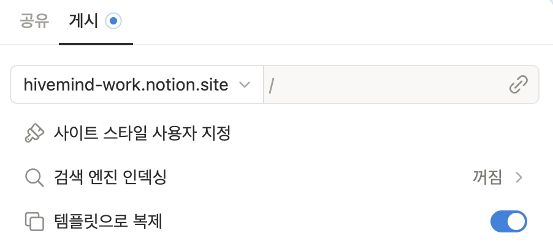
Q. 글자 크기·서식을 바꾸려면? → 글자를 드래그하면 작은 메뉴가 떠요. 굵게(B)·색·제목 등을 고를 수 있습니다.
Q. 항목(역할·상태 등) 선택지에 원하는 게 없어요. → 그 칸을 클릭하면 맨 아래에 직접 입력해 새 항목을 추가할 수 있습니다. 다만 표 전체 분류와 관련되니, 새로 만들기 전에 담당자(기획)와 한 번 맞춰주세요.
Q. 누가 바꿨는지 알 수 있나요? → 줄을 열고 오른쪽 위 시계 모양의 업데이트 기록에서 변경 이력을 볼 수 있습니다.
프로젝트로 연결됩니다./(슬래시) 명령: 빈 줄에서 /를 치면 넣을 수 있는 것들의 메뉴가 뜹니다.프로젝트 칸 꼭 지정!)프로젝트 칸 지정 = 자동으로 한곳에 모임Ctrl/⌘ + Z